ysoserial之URLDNS调试
# 利用链简述
- 触发结果为一次 DNS 请求，适用目标无回显情况
- 使用 java 内置类构造，无第三方库依赖
# URLDNS 利用代码
poc：
1 | package ysoserial.payloads; |
链接：https://github.com/frohoff/ysoserial/blob/master/src/main/java/ysoserial/payloads/URLDNS.java
# 调试分析
项目链接：https://jitpack.io/com/github/frohoff/ysoserial/master-SNAPSHOT/ysoserial-master-SNAPSHOT.jar
打开 idea，找到 URLDNS 入口：ysosertial->src->main->java->ysoserial->payloads->URLDNS.java->main ()
# 运行尝试
直接运行 main 函数，发现默认传入的命令为 calc.exe
报错：URL 初始化失败，找不到 calc.exe 协议
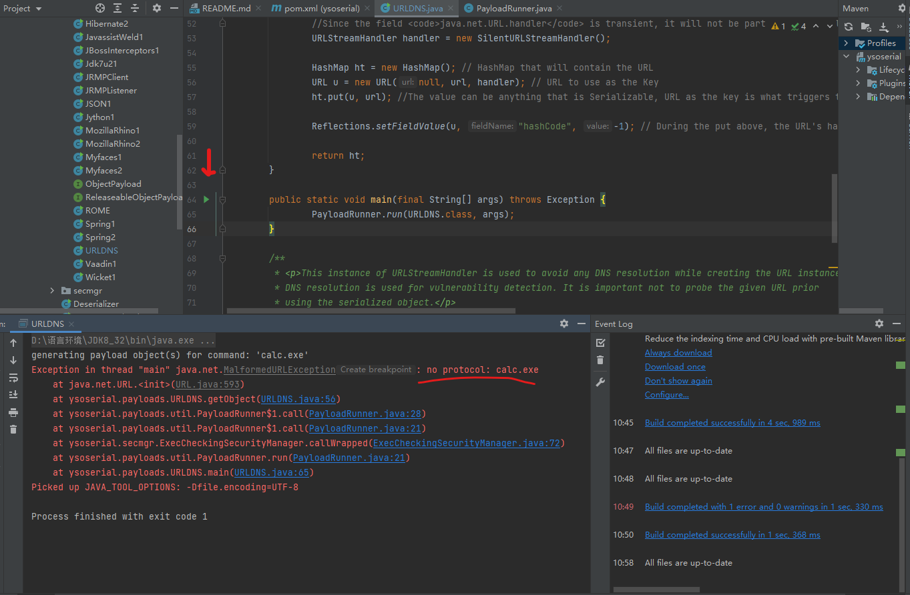
最后一行报错信息指向 main 函数，倒数第二行报错信息指向 PayloadRunner
说明为传入参数 args 有误，应为 URL，也是我们要发送请求的地址
打开 dnslog，获取到地址为：ghtzjz.dnslog.cn
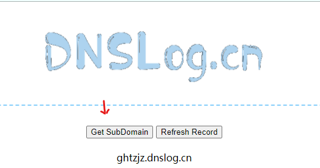
编辑传入参数，http://ghtzjz.dnslog.cn
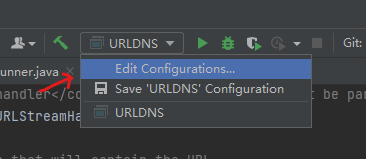
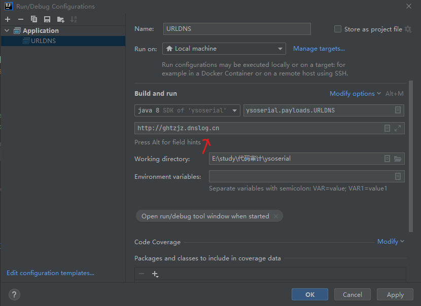
再次运行 main ()，payload 为我们传入的参数
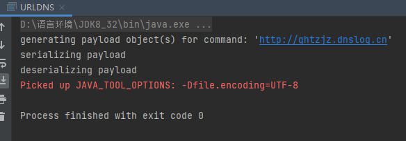
刷新 dnslog 的请求记录，发现接收到了请求，利用成功
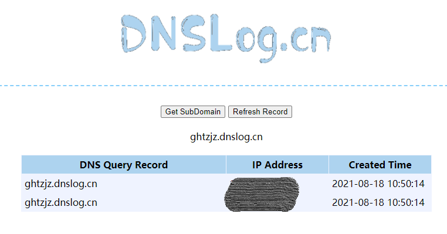
# 代码调试
我们从 main 函数一步一步调试，会发现 URLDNS 在 main 中调用 PayloadRunner#run ()
然后 PayloadRunner#run () 中调用 URLDNS#getObject ()
URLDNS#getObject () 中的 HashMap ht 就是我们要生成的（未序列化）payload
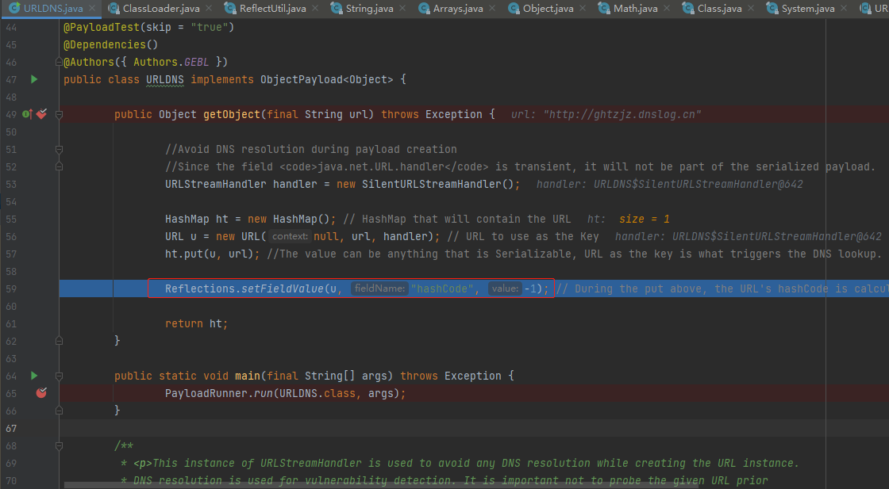
getObeject 方法中，创建了一个 URL 对象（存储我们输入的 dns 地址）–> 再将 URL 对象放入 HashMap 中
下面一行的注释写道，在上面的 put 过程中，计算并缓存了 URL 的 hashCode; 这将重置它，以便下次调用 hashCode 时将触发 DNS 查找
那么在 ht.put 时，我们进入 HashMap 查看，发现 key 进行了 hash 计算
（这里插播一条小道消息，点击这个调试可以返回上一步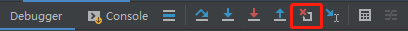)
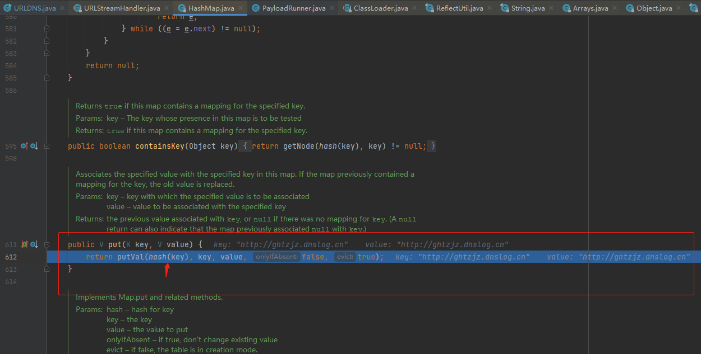
在这里就是我们的 URL 对象进行了 hash 计算
hash 计算前的 URL 对象：
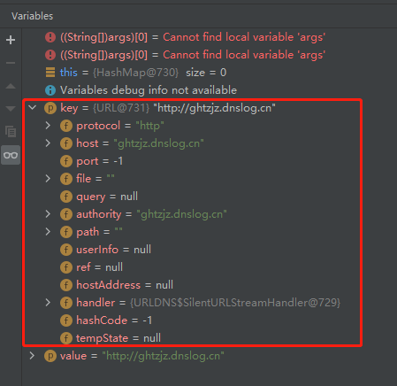
hash 计算后的对象（就是对象中的 hashCode 变量发生了变化嘛）：
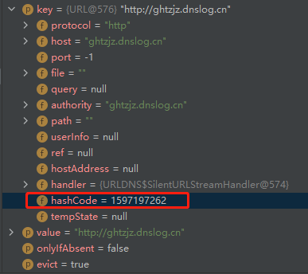
进入下一行代码，Reflections.setFieldValue 是什么呢？
看名字就是一个通过反射设置成员变量值的功能😀
进入函数内部，是要设置传入对象的成员变量 hashCode 的值
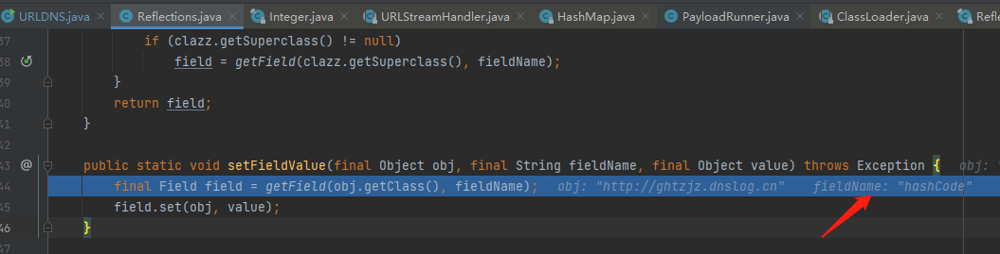
查看变量值，传入对象是包含 payload 的 URL 对象，要将它的 hashCode 值设置为 - 1
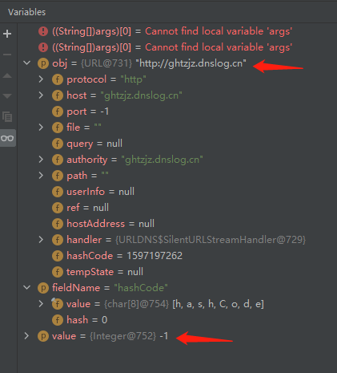
执行完这行代码，发现变量 u 和 ht 中存储的 URL 对象的 hashCode 值都变为 - 1 了
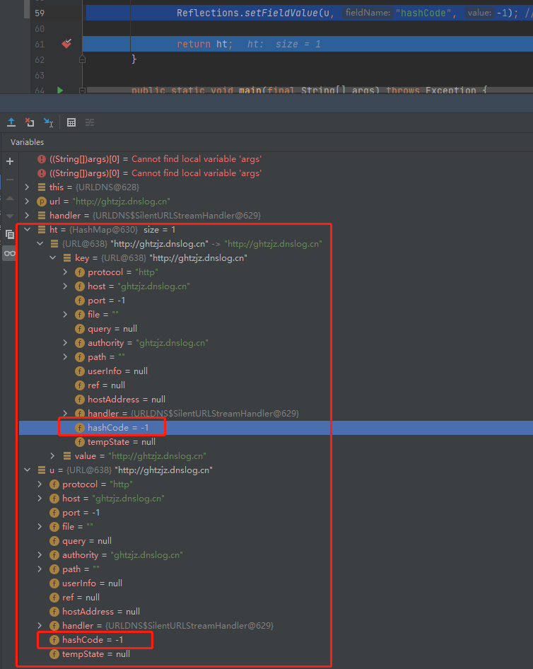
然后返回 ht，也就是更改过存储 key 的 hashCode 值的 HashMap
再次进入 PalodRunner#run，返回的 HashMap 赋值给 objBefore，再将其序列化赋值给 ser
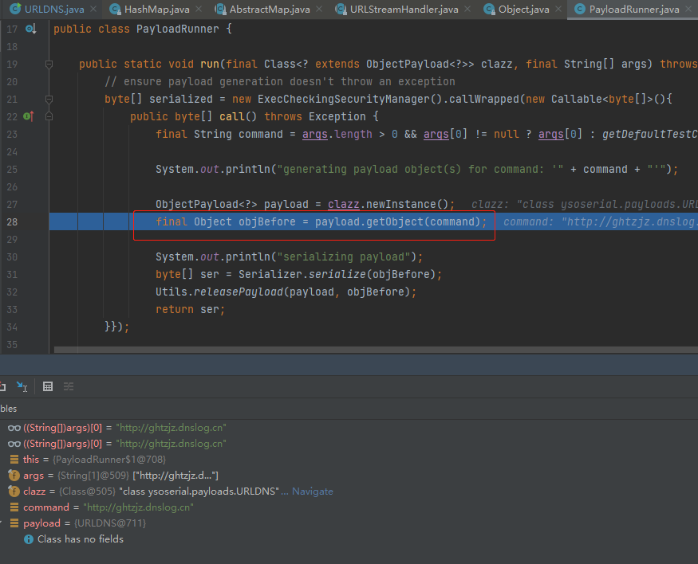
Utils.releasePayload (payload, objBefore) 应该是释放资源的代码（不用在意，和最后返回值无关）
最后返回 ser，即将 ser 值赋给变量 serialized，所以 serialized 就是序列化后的 payload
终于！开始反序列化触发漏洞了！
从这里进入反序列化函数
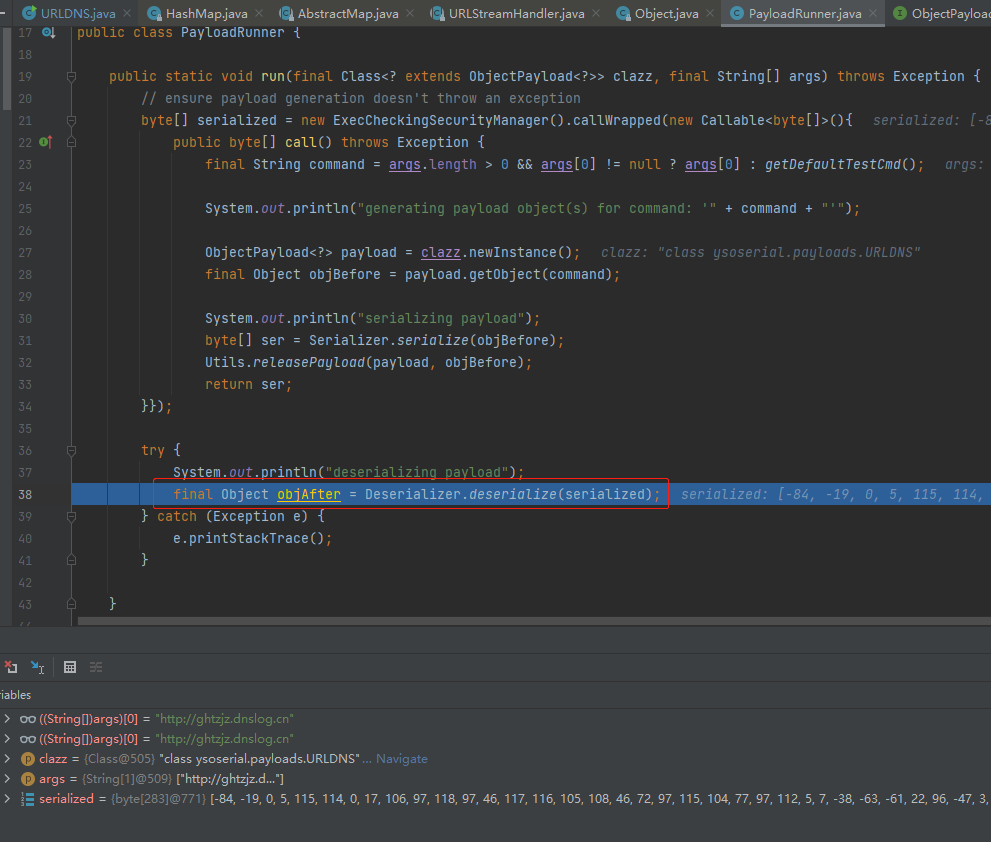
代码注释中说明，利用链从 HashMap#readObject () 进入，直到进入 URL#hashCode () 触发 DNS 请求
Gadget Chain:
HashMap.readObject()HashMap.putVal()HashMap.hash()URL.hashCode()
那我们就一直点点点直接看见 readObject
好了过了没看见嘤嘤嘤
直接去 Hash#readObject 处下个断点
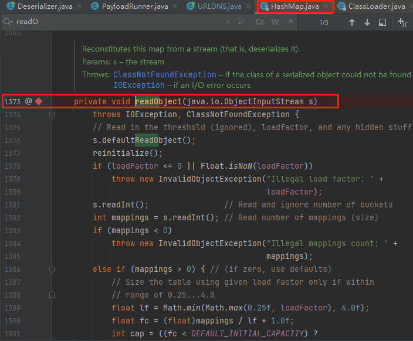
往下翻翻就会看见一段代码，又看见了熟悉的单词，hash
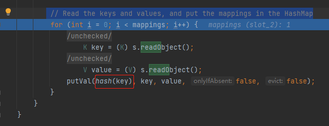
根据利用链我们可知触发漏洞的 hashCode () 就在 hash () 中，我们进入该函数
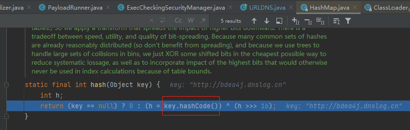
到达 URL#hashCode，果然其中有 key.hashCode ()
因为我们在构造 payload 时将 hashCode 赋值为 - 1，所以不会进入 if 而是执行下面的代码
调用 URLStreamHandler#hashCode
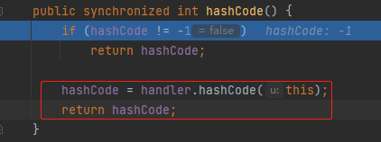
进入 URLStreamHandler#hashCode
根据 p 神的文章所言，getHostAddress 中有一行代码
InetAddress.getByName(host) ;
其作⽤是根据主机名，获取其 IP 地址，在⽹络上其实就是⼀次 DNS 查询，整个触发过程就已经完成啦

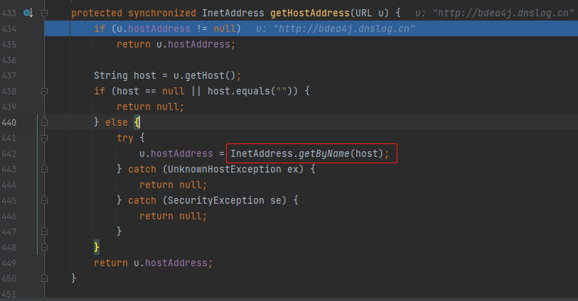
后面继续跟进就是地址的具体查询过程了，无了无了
下图是漏洞触发的调用栈
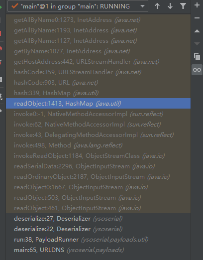
# 总结
payload 构造
将我们输入的 dns 地址存储在 URL 对象中 -> 将 URL 对象作为 key 存储在 HashMap 中 -> 由于作为 key 值，在 put 时会进行 hash 计算，那我们就通过反射更改其 hashCode 值为 - 1
漏洞触发
反序列化 HashMap 时，会调用 hash () 计算 key 的 hash 值 -> 计算时，调用 (URL 对象) key#hashCode () -> 由于我们将该对象的 hashCode 值设置为 - 1，所以会调用 handler.hashCode () -> 其中获取地址的代码， InetAddress addr = getHostAddress(u); 实际上就是一次 DNS 查询
小彩蛋
在构造 payload，ht.put () 时，由于 URL 的 hashCode 值为 - 1，所以同样会调用 handler.hashCode () 触发 DNS 查询，可是为什么我们只能获取到一条 dns 查询记录，而不是两条呢？
直接在 DNS 查询处下断点
生成 payload 时，进入 URLStreamHandler#hashCode 查看当前变量
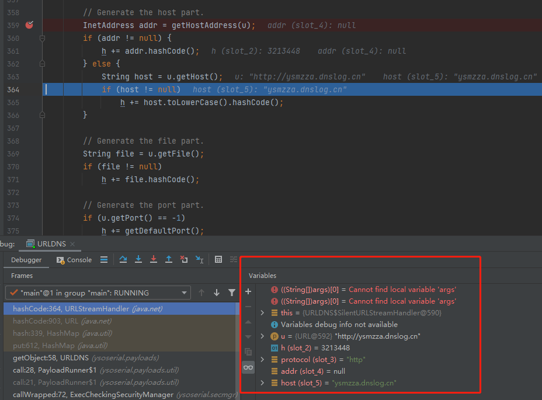
反序列化时，进入 URLStreamHandler#hashCode 查看当前变量
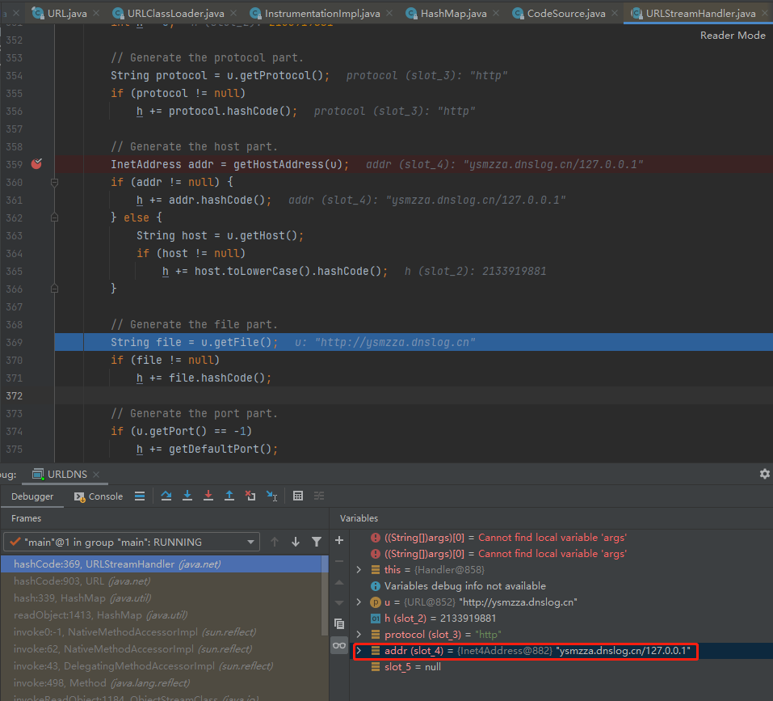
可以发现获取到的 addr 有值了，为 域名/127.0.0.1
那么同样是将 http://ysmzza.dnslog.cn 传入 getHostAddress(u) 得到的结果却不一样呢？
那么我们再进入 getHostAddress(u) 进行对比
构造 payload 进入 getHostAddress(u) 时，如下图
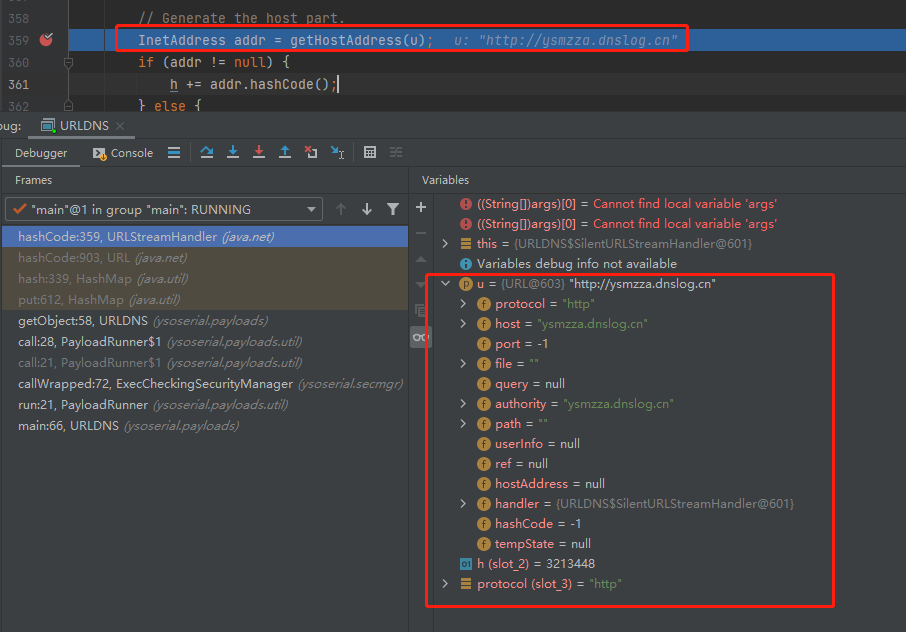
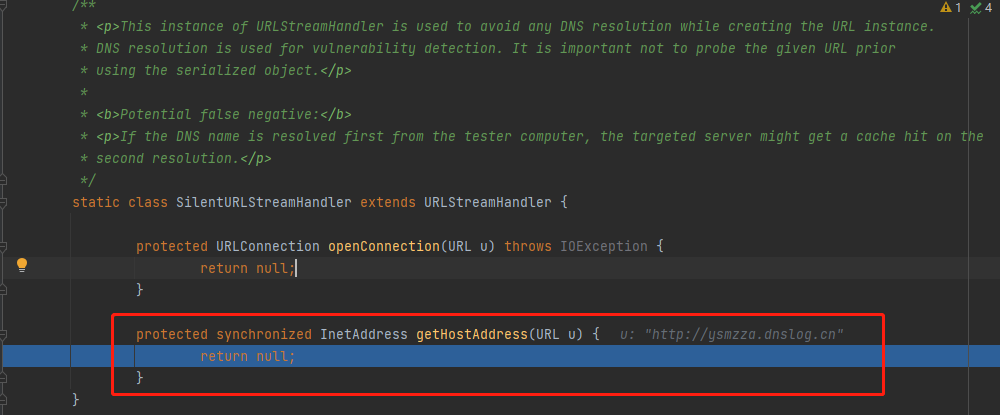
这里调用的 SilentURLStreamHandler#getHostAddress 直接返回的 null
注释:
这个 URLStreamHandler 实例用于在创建 URL 实例时避免任何 DNS 解析。 DNS 解析用于漏洞检测。重要的是不要在使用序列化对象之前探测给定的 URL。潜在的误报：如果首先从测试计算机解析 DNS 名称，则目标服务器可能会获得缓存击中第二个决议。
而在我们反序列化后进入 getHostAddress(u) ，URL 对象中的 handler 就是默认的 handler 了，因而会触发 DNS 查询
所以 POC 中定义 URLStreamHandler 内部类，避免生成 paayload 时进行 DNS 解析（其实看注释就能看到，但我一开没有看到这里的代码 (๑・́ωก̀๑) ）
小问题
-
漏洞是通过 URLStreamHandler#hashCode 触发的，那么这个 handler 是啥玩意？
-
new URL 对象时，一定要传入 handler 才能触发漏洞吗？如果不传入 handler，程序还能正常运行吗？（因为 HashMap#put 时会调用 URLStreamHandler#hashCode）会有默认的 handler 给我们调用吗？
查查 API
抽象类
URLStreamHandler是所有流协议处理程序的通用类，流协议处理程序知道如何为特定协议类型建立连接，如http或https。在大多数情况下，
URLStreamHandler子类的实例不是由应用程序直接创建的。 更确切地说，在第一时间构建时的协议名称遇到URL，适当的流协议处理程序被自动加载。
所以流协议程序用于为协议建立连接，并构建时的协议名称遇见 URL 时，适当的流协议处理程序被自动加载
所以其实不传入 handler，URL 对象也会自动加载 handler
由小彩蛋的内容可知传入自定义的 handler 只是为了在生成 payload 时不进行 dns 解析
# 调试遇到的问题（未解决）
在尝试代码调试时，发现无法启用 debug
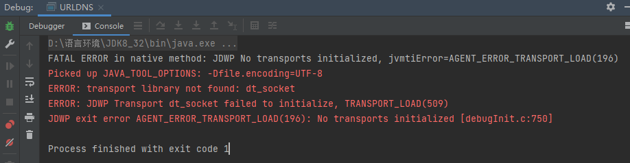
看第一行，运行的是 jdk8_32，而我的 idea 是 64 位的，估计是不一致导致的问题（以前经常碰见 tomcat 和 jdk 不一致导致的问题）
在上方菜单栏 file->project structure 中可以设置 jdk 版本，更改为 64 位 jdk
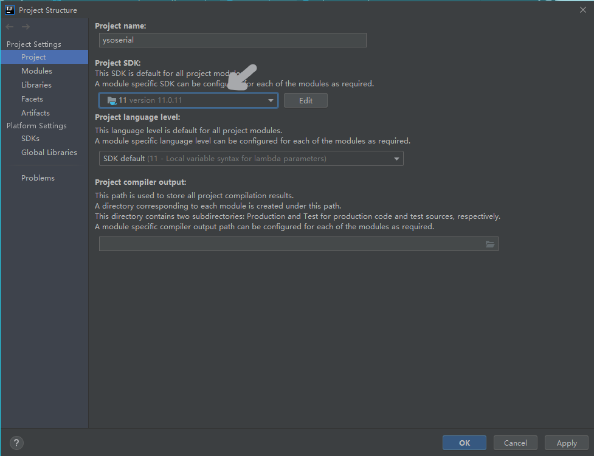
然后就会报错，程序包 sun.rmi.server 不存在
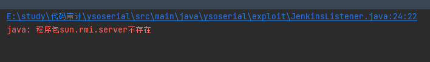
但是在使用 jdk8 运行程序时并没有该错误，ctrl+click 点击进入报错程序包，是可以找到在 java 原生库中的
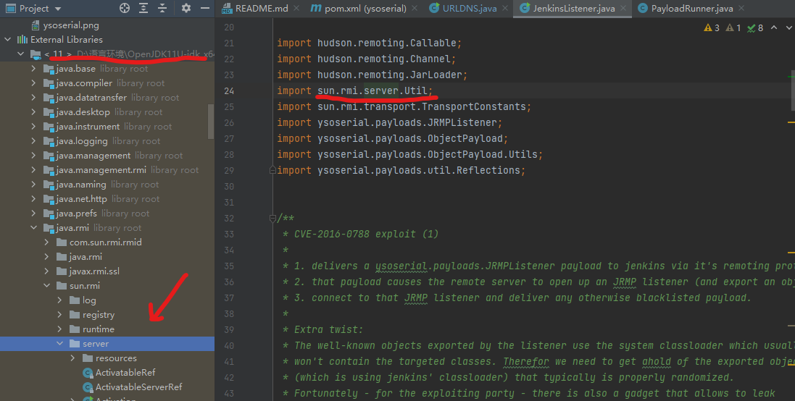
也就是说在编译程序的 classpath 中没有包含’sun.rmi.server’这个包
我的直觉告诉我是版本的问题，可是上图中 jdk11 的包里面也有这个包的并且已经引入项目中了
所以我换回 jdk8_32，查看 jar 包的区别
jdk8：
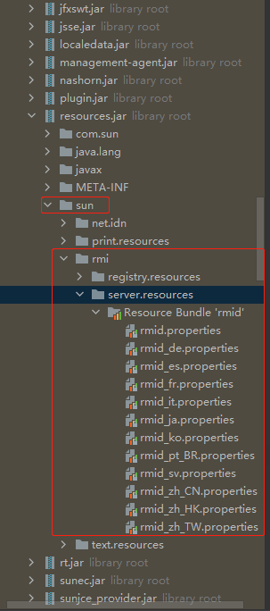
jdk11:
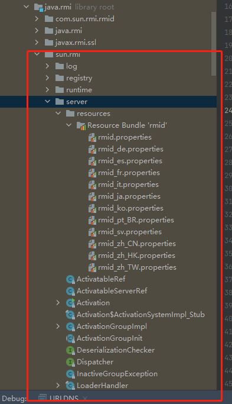
难道这个世界有些东西我真的，难以探寻吗，这真的就是我的极限了吗，不，我要去百度！！百度救我！！！
这里发现，jdk11 不再提供 corba 工具，rmic (RMI 编辑器) 不再支持 - idl 或 - iiop 选项。
可是 java11 的 api 里面是有 rmi 的🙁
果然换成 jdk8_64 所有问题迎刃而解，那么这个问题…
当然不能算解决了，未完待续！